항공무선통신사 (2011-03-13 기출문제)
1과목: 전파법규
1. 다음 중 청문대상이 아닌 것은?
- 무선국 개설허가의 취소
- 적합성평가의 취소
- 무선국검사 합격 취소
- 개설신고한 무선국의 폐지
(정답률: 70%)

2. 무선국의 최대 허가유효기간은 몇 년의 범위 내에서 정할 수 있는가?
- 1년
- 5년
- 7년
- 10년
(정답률: 67%)
3. 의무항공기국의 무선설비로서 A3E전파 118[MHz]부터 136.975[MHz]까지 주파수대의 전파를 사용하는 송신설비의 유효통달거리로 옳지 않은 것은?
- 비행고도 1,500미터 : 150킬로미터 이상
- 비행고도 3,000미터 : 210킬로미터 이상
- 비행고도 5,000미터 : 275킬로미터 이상
- 비행고도 7,000미터 : 300킬로미터 이상
(정답률: 79%)
4. 무선국의 허가를 받은 자가 준공기한(전파법에 의하여 기한을 연장한 경우에는 그 기한)이 지난 후 몇 일이 지날 때까지 준공신고를 마치지 아니한 경우에 무선국의 개설허가를 취소할 수 있는가?
- 20일
- 30일
- 40일
- 50일
(정답률: 94%)
5. 항공기국이 항행 중 또는 항행 준비 중에 허가증에 기재된 사항의 범위 외에 운영할 수 있는 경우가 아닌 것은?
- 기상의 조회 또는 시간의 조합을 위하여 행하는 항공국과 항공기국 간의 통신
- 항공기국에서 그 시설자의 업무를 위한 전보를 항공국에 보내기 위하여 행하는 통신
- 동일한 시설자에 속하는 항공기국과 이동업무 무선국 간에 행하는 시급하지 않은 통신
- 비상통신의 통신체제 확보를 위한 훈련목적의 통신
(정답률: 81%)
6. 전방향표지시설(VOR)에 대한 설명이다. 옳지 않은 것은?
- 사용주파수는 108[MHz]부터 118[MHz]의 범위이다.
- 송신설비의 주반송파 변조방식은 주파수 변조하는 것일 것
- 기준 위상신호 및 가변 위상신호를 연속하여 송신할 수 있을 것
- 식별신호는 모오스 부호에 의해 적어도 30초마다 1회 송신할 수 있을 것
(정답률: 64%)
7. 다음 중 항공무선통신사의 통신운용 범위 중 틀린 것은?
- 항공기국을 위한 무선항행국 무선설비의 통신운용
- 항공국을 위한 무선항행국 무선설비의 통신운용
- 항공기를 위한 무선항행국 무선설비의 통신운용
- 위 ①내지 ③에 정한 사항 외의 항공운항 및 항공업무 관련 무선국의 공중선 전력 250와트 이하의 무선설비의 통신운용
(정답률: 74%)
8. 다음 중 항공기 구명이동국의 호출보호의 구성으로 옳은 것은?
- 모항공기의 완전한 호출부호와 1개의 숫자
- 모항공기의 완전한 호출부호와 0과 1 이외의 1개의 숫자
- 2개의 숫자와 3개의 문자 다음에 1개의 숫자
- 3개의 숫자와 2개의 문자 다음에 1개의 숫자
(정답률: 77%)
9. 항공이동업무에서 취급되는 통보의 순서로 올바르게 구성된 것은?
- 호출(발신국이 표시되는 것)-본문
- 호출(발신국이 표시되는 것)-“FOR”(구문인 경우에 한한다)
- 호출(발신국이 표시되는 것)-수신인 명칭
- 호출(발신국이 표시되는 것)-착신인 명칭
(정답률: 86%)
10. 다음 중 비상위치지시용 무선표지국에서 송신하는 통보는 무엇으로 보는가?
- 조난통신
- 긴급통신
- 안전통신
- 비상통신
(정답률: 68%)
11. 항공기국 무선설비의 일반조건을 설명한 것 중 옳지 않은 것은?
- 작고 가벼우며, 취급이 용이할 것
- 온도, 습도, 기압진동과 가속도 등에 의한 기능저하가 최대일 것
- 수신설비는 가능한 한 항공기의 전기적 잡음에 의한 방해를 받지 아니할 것
- 공중선계는 풍압과 빙결에 견딜 것
(정답률: 88%)
12. 해상이동업무의 무선국과 통신하기 위하여, 항공기국이 156[MHZ]와 174[MHz] 사이의 주파수를 사용하는 경우, 송신기의 평균송신전력은 몇 와트를 초과할 수 없는가?
- 50와트
- 30와트
- 10와트
- 5와트
(정답률: 75%)
13. 다음 중 무선국 허가를 위한 심사사항이 아닌 것은?
- 주파수 지정이 가능한지의 여부
- 설치 운용할 무선설비가 기술기준에 적합한지의 여부
- 공사가 설계서의 내용과 일치하는지의 여부
- 무선종사자의 자격정원 배치기준에 적합한지의 여부
(정답률: 67%)
14. “공중선 전력”이라 함은 무엇을 말하는가?
- 송신설비에서 공간으로 발사되는 전력
- 공중선에서 공간으로 발사되는 전력
- 공중선의 급전선에 공급되는 전력
- 송신설비의 종단부에 공급되는 전력
(정답률: 78%)
15. 다음 중 무선방위측정장치의 설치장소로부터 1[km] 이내에 방송통신위원회의 승인 없이 건설할 수 있는 것은?
- 송신공중선
- 철도 및 궤도
- 앙각 3도 미만의 건축물 등
- 고가 케이블
(정답률: 92%)
16. 다음 중 외국정보 또는 그 대표자에게 무선국의 개설을 허용할 수 없는 무선국은?
- 실험국
- 의무선박국
- 의무항공기국
- 방송국
(정답률: 71%)
17. 다음 중 항공이동위성업무에 있어서 통신 우선순위가 가장 빠른 것은?
- 긴급신호에 의하여 전치된 통신
- 무선방향탐지와 관련된 통신
- 비행안전메시지
- 조난관련 통신
(정답률: 83%)
18. 항공기국이 사용하여야 하는 전파형식 및 사용주파수가 아닌 것은?
- 전파형식 A3E 주파수 121.5[MHz]
- 전파형식 A3E 주파수 108[MHz]부터 118[MHz]까지의 주파수대에서 방송통신위원회가 정하는주파수
- 전파형식 J3E 또는 H3E 주파수 2,850[kHz]부터 22[MHz]까지의 주파수대에서 방송통신위원회가 정하는 주파수(일부 국내노선 취항 항공기국은 제외될 수 있음)
- 전파형식 A3E 주파수 243[MHz](수색구조에 종사하는 항공기에 있어서 장거리 취항 비행을 행하는 항공기국에 한함)
(정답률: 53%)
19. 다음 중 국제항공고정 무선통신망에 속하는 항공고정국에서 취급하는 통보의 통신의 우선순위를 나타내는 약어로 옳지 않은 것은?
- 제1순위 : “SS”
- 제2순위 : “DD” 또는 “FF”
- 제3순위 : “GG” 또는 “KK”
- 제4순위 : “TT”
(정답률: 85%)
20. 다음 중 MF(핵터미터파) 전파의 주파수 범위로 옳은 것은?
- 300[kHz] 초과 3,000[kHz] 이하
- 3[MHz] 초과 30[MHz] 이하
- 30[MHz] 초과 300[MHz] 이하
- 300[MHz] 초과 3,000[MHz] 이하
(정답률: 78%)
2과목: 기초전파공학
21. 이상적인 연산증폭기의 특성으로 적절한 것은?
- 입력저항이 0이다.
- 출력저항이 무한대이다.
- 전압이득이 무한대이다.
- 대역폭과 지연응답이 0이다.
(정답률: 41%)
22. 직류(DC)를 교류(AC)로 변환시키는 전원공급장치는?
- Auxiliary Power Unit
- Converter
- Inverter
- Bus Power control Unit
(정답률: 54%)
23. 원형 도파관의 통과 주파수는 무엇에 의하여 결정되는가?
- 내부지름
- 도파관의 길이
- 도파관의 무게
- 도파관의 부피
(정답률: 51%)
24. 원거리 통신에 이용될 수 있는 것은 어느 성분인가?
- 정전계
- 복사계
- 전자계
- 유도계
(정답률: 33%)
25. NDB의 유효통달거리는 무엇에 의하여 가장 크게 좌우되는가?
- 지상국의 송신출력
- 지상국의 위치
- 송신되는 주파수대역
- 유효거리는 항상 일정하다.
(정답률: 38%)
26. 반송파 주파수가 118.025[MHz]인 AM 송신기에 음성주파수 1.0[kHz] ~ 3.0[kHz] 신호를 변조하여 송신하면 상측파대 최구 주파수(fUSB)와 하측파대 최저주파수(fLSB)는 얼마인가?
- fUSB = 118.028[MHz], fLSB = 118.022[MHz]
- fUSB = 118.026[MHz], fLSB = 118.024[MHz]
- fUSB = 118.028[MHz], fLSB = 118.024[MHz]
- fUSB = 118.026[MHz], fLSB = 118.022[MHz]
(정답률: 54%)
27. 하나의 공중선에 여러 개의 주파수의 전파를 이용하려고 할 때에 사용되는 코일을 무엇이라고 하는가?
- 단축 코일
- 연장 코일
- 트랩
- 유도 코일
(정답률: 43%)
28. 다음 중 TACAN 오차를 방지하기 위한 방법이 아닌 것은?
- TACAN국 식별을 점검하고 Monitor 한다.
- ADF, VOR, Radar 등 다른 항법장비를 함께 이용한다.
- 비행 전에 사용하게 될 지상국의 각종 정보를 미리 점검한다.
- TACAN국을 수시로 바꾼다.
(정답률: 55%)
29. ILS Marker는 Final Approach 중의 항공기에 대하여 어떤 정보를 제공하는가?
- 방위
- 고도
- 시간
- 거리
(정답률: 47%)
30. 태양면의 폭발현상으로 인하여 지구 대기 상층의 전리층에 이상이 생겨 나타나는 단파통신의 장애 현상은 무엇인가?
- 에코(echo)
- 룩셈부르크 효과(Luxemburg effect)
- 델린저 현상(dellinger effect)
- 자기람(magnetic storm)
(정답률: 51%)
31. 항공기의 위치에 대한 정보를 주기 위하여 역원추형의 지향성 전파를 수직으로 상공에 발사하는 무선표지업무를 행하는 항행안전무선 시설은?
- Fan Marker
- DME
- Z Marker
- VOR
(정답률: 30%)
32. 무선송신기의 구성과 관계가 없는 것은?
- 발진회로
- 증폭회로
- 변조회로
- AVC 회로
(정답률: 48%)
33. FM 송신기의 발진부에서 30[MHz]로 동작하고 있고 체배증폭기에서 2체배를 하고 있을 때 출력 주파수는?
- 30 [MHz]
- 32 [MHz]
- 60 [MHz]
- 900 [MHz]
(정답률: 56%)
34. 항공기의 무선, 항법, 위성설비를 측정할 수 있는 측정기가 아닌 것은?
- 스펙트럼분석기
- Mano Meter
- SWR Meter
- 주파수측정기
(정답률: 34%)
35. 다음 중 파장이 가장 짧은 것은?
- LF
- MF
- HF
- VHF
(정답률: 55%)
36. 수정 발진기의 주파수 안정도가 높은 이유 중 잘못된 것은?
- 수정편의 Q가 매우 높다.
- 부하 변동의 영향을 전혀 받지 않는다.
- 발진 조건을 만족시키는 유도성 주파수 범위가 매우 좁다.
- 기계적으로나 물리적으로 안정하다.
(정답률: 46%)
37. 100[W]의 송신기 전력이 3[dB]만큼 떨어졌다. 이 때 송신기 출력은?
- 10 [W]
- 50 [W]
- 100 [W]
- 200 [W]
(정답률: 44%)
38. 사용주파수대는 Ku, K, Ka Band를 사용하며, 공항 내 지상 이동물체에 대한 관제업무를 용이하게 수행할 수 있도록 침입방지 및 충돌방지 등에 대한 경보기능을 갖추고 있으며, 방위각은 360도이고, 고도는 비행장 지표면에서 60[m]까지 이다. 항공기와 차량 등을 목표물의 크기/형태 및 이동속도를 구분하는 설비로 최소한 1초에 한번씩 정보를 갱신하는 레이더는 어느 것인가?
- ASDE
- FDP
- ARTS
- ASR
(정답률: 47%)
39. 발진조건을 옳게 나타낸 것은? (단, A : 증폭도, β : 궤환률)
- A = 1
- β = 1
- A β = 1
- A β ＜ 1
(정답률: 50%)
40. 항공기 무선설비 중 HF(단파) AM 무선전화 송신기에 단일 정현파의 가청주파수로 양극변조를 할 경우 종단 전력증폭기의 양극손실이 30[W]이며 효율이 70%라고 할 때, 이 송신기의 출력전력은 약 얼마인가? (단, 기타전력은 무시한다.)
- 40[W]
- 60[W]
- 70[W]
- 100[W]
(정답률: 30%)
3과목: 통신보안
41. 송신보안에 해당되는 것은?
- 문서보관 철저
- 접근 또는 관찰방지
- 자재보관소에 보호구역 표시
- 기만통신 방지
(정답률: 53%)
42. 통신보안대책에 해당되지 않는 것은?
- 통신내용의 비밀유무를 검토한다.
- 통신내용에 암호를 사용한다.
- 통신보안규정을 준수토록 한다.
- 통신약어를 사용한다.
(정답률: 47%)
43. 통신정보활동의 수단으로 맞는 것은?
- 통신정보를 방어하기 위한 활동 수단
- 통신내용의 도청을 저지하는 수단
- 누설된 정보 분석을 지연시키는 수단
- 통신내용을 수집분석하여 유용한 정보생산 수단
(정답률: 55%)
44. 무선통신운용에 있어 기본적인 통신제원에 속하지 않은 것은?
- 교신시간
- 호출부호
- 주파수
- 통신문 내용
(정답률: 38%)
45. 상대의 통신망에 개입, 상대를 오인케 하여 비밀을 탐지하는 수단은?
- 기만통신
- 방해통신
- 교신분석
- 암호분석
(정답률: 53%)
46. 통신보안상 무선통신의 취약점이라고 할 수 없는 것은?
- 누구든지 무선통신을 사용할 수 있기 때문이다.
- 사용자가 도청 당하는지의 여부를 인지할 수 없기 때문이다.
- 무선통신망은 보안자재를 사용할 수 있기 때문이다.
- 무선통신망은 유선전화와 연결될 수 있기 때문이다.
(정답률: 48%)
47. 다음 중 통신보안의 기능을 잘 설명한 것은?
- 통신보안은 통신내용을 보호하는 기능이다.
- 통신보안은 통신내용을 수집하는 기능이다.
- 통신보안은 공격수단이라고 할 수 있다.
- 통신보안은 소수인원으로 될 수 있다.
(정답률: 54%)
48. 무선통신망의 보안대책으로 적합한 것은?
- 불요불급한 사항은 무선통신망 사용
- 무선종사자 자격증 취득자 여부에 관계없이 사용
- 통신보안자재 또는 보안장비 설치 사용
- 무선통신 운용교육 미필자도 사용
(정답률: 53%)
49. 통신보안용 호출명칭의 제작관리 및 운용에 관계된 비밀 관리부철의 보존 기간은 어느 것인 것?
- 영구보존
- 1년
- 5년
- 10년
(정답률: 32%)
50. 통신내용이 중요하다고 판단되었을 경우 가장 안전한 통신방법은?
- 통신 약부호를 사용한다.
- 약어를 사용한다.
- 모르스 부호를 사용한다.
- 암호를 사용한다.
(정답률: 54%)
4과목: 영어
51. 다음 문장의 빈칸에 들어갈 가장 적절한 단어는?
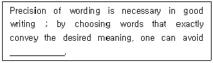
- redundancy
- ambiguity
- lucidity
- duplicity
(정답률: 57%)
52. 다음 밑줄 친 부분에 알맞은 말은?
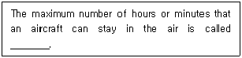
- Endurance
- Maximum duration
- Longest flight duration
- Maximum flight period
(정답률: 65%)
53. 밑줄 친 부분에 알맞은 단어는?
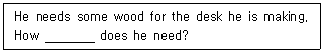
- much
- great
- long
- many
(정답률: 58%)
54. 항공무선통신에서의 송신 방법에 대한 다음 설명 중 적절치 않은 내용은 어떤 것인가?
- Transmitter should maintain even rate of speech not exceeding 50 words per minute.
- Transmitter should maintain the speaking volume at a constant level.
- Transmitter should be familiar with the microphone operating techniques.
- Transmitter should suspend speech temporarily if it becomes necessary to turn the head away from the microphone.
(정답률: 52%)
55. 다음 빈칸에 가장 적합한 것은?
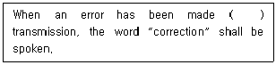
- at
- on
- by
- in
(정답률: 50%)
56. 다음은 어떤 용어에 대한 설명인가?
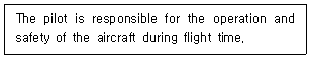
- Captain
- Pilot-in-Command
- Second-in-Command
- Copilot
(정답률: 57%)
57. 다음 용어에 대한 설명으로 옳은 것은?
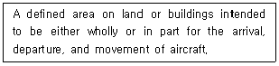
- Aerodrome
- Aeronautical Area
- Aircraft
- Air Traffic
(정답률: 58%)
58. 고도 14,500[feet]를 송신할 때 가장 바람직한 송신 용어 및 방식은?
- fourteen and five hundreds
- fourteen decimal five hundreds
- fourteen thousands and five hundreds
- one four thousand five hundred
(정답률: 72%)
59. “반송주파수 2,182[kHz]는 무선전화용 국제조난 주파수이다.”에서 밑줄 친 부분에 대한 영문표현으로 적합한 것은?
- An international distress frequency for radiotelegraphy
- An international emergency frequency for radiotelegraphy
- An international emergency frequency for radiotelephony
- An international distress frequency for radiotelephony
(정답률: 62%)
60. 다음 내용이 설명하는 항공용어는 어느 것인가?
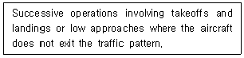
- touch and go operation
- closed traffic
- rectangular pattern
- circling maneuver
(정답률: 57%)
61. ICAO에서 규정한 다음 용어의 정의로 옳지 않은 것은?
- Air Traffic : All aircraft in flight or operating on the maneuvering area of an aerodrome.
- ATC unit : A generic term meaning variously area control center approach control office or aerodrome control tower.
- Air taxing : Movement of a helicopter above the surface of an aerodrome, normally in a ground effect.
- Aeronautical station : A mobile station in the aeronautical mobile service.
(정답률: 46%)
62. 다음에서 밑줄 친 부분의 뜻을 맞게 설명한 것은 어느 것인가?
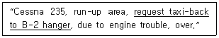
- B-2 격납고 뒤로 활주할 것을 요망함.
- B-2 격납고로 되돌아 갈 것(활주)을 요망함.
- B-2 주기장으로 갈 것임.
- B-2 주기장으로 대기할 것임.
(정답률: 67%)
63. 항공통신 교신 중에 조종사 또는 관제사가 수초 동안 기다릴 것을 요구할 때 “ATC clearance”가 곧 나간다는 것을 알릴 때 사용되는 용어는?
- Wait seconds
- Standby
- Wait
- Wait a moment
(정답률: 68%)
64. 다음의 괄호에 들어갈 것으로 적합한 것은?
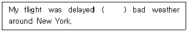
- because
- because of
- without
- within
(정답률: 63%)
65. 다음 내용이 설명하는 항공용어는 어느 것인가?
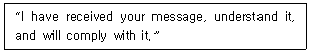
- Roger
- Roger out
- Wilco
- Will do
(정답률: 61%)
66. 다음 중 A문장을 B문장으로 가장 적절히 화법 전환한 것은?
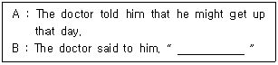
- You may get up today
- He may get up today
- I may get up that day
- He may get up that day
(정답률: 60%)
67. 조난 중인 항공기를 관제하는 관제기관에서 기타 무선국의 무선침묵을 지시할 때 사용되는 표현으로 가장 적절한 내용은?
- Stop Transmitting
- Break Break
- Keep Silence
- Stand By
(정답률: 68%)
68. 다음 용어의 정의가 나타내는 항공통신 용어로 적당한 것은?
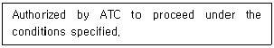
- CONTACT
- STAND BY
- CLEARED
- CLEAR FOR TAKE-OFF
(정답률: 63%)
69. 항공무선 교신에서 나의 송신에 대한 상대국의 수신상태를 알려고 질문하는 용어는?
- Advise me your receiving level.
- Report your receiving condition.
- What is your listening status?
- How do you read me?
(정답률: 72%)
70. 두 사람의 대화에서 밑줄 친 곳에 알맞은 말은?
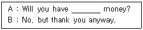
- neither
- some
- either
- other
(정답률: 70%)